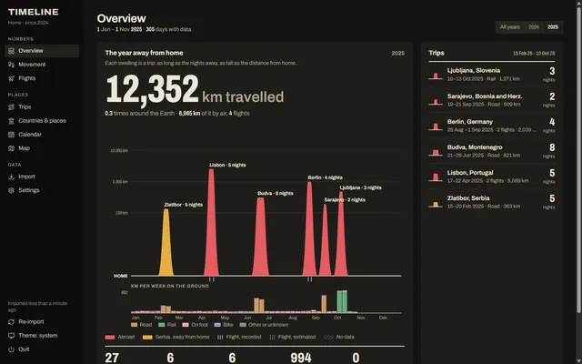
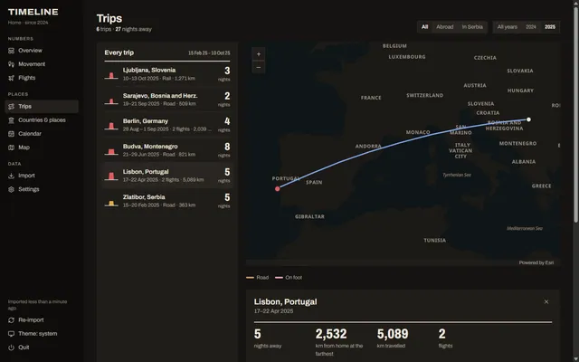
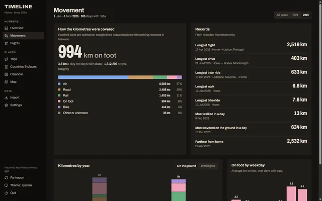
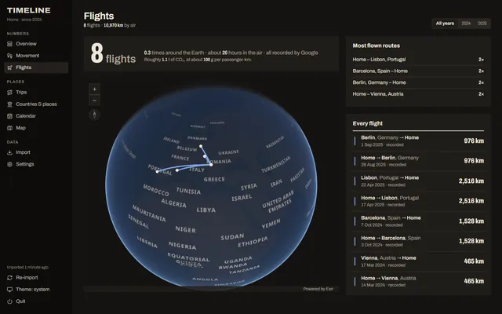

Timeline
Hard numbers from a Google Timeline export: nights away, trips, flights and kilometres
Shots
-

View larger1 Overview: the year out of the home city, each trip as a swelling (sample data) -

View larger2 Trips: every trip with its route on the map (sample data) -

View larger3 Movement: kilometres by mode and personal records (sample data) -

View larger4 Flights on a 3D globe, with most flown routes (sample data)


Timeline reads the Google Maps Timeline export from an Android phone into a local SQLite database and turns it into statistics: nights away from home, distance by mode and year, recorded and estimated flights, trips, countries and personal records. Maps support the numbers instead of leading, with a 2D map for trips and a 3D globe for flights. Every figure says how it was counted, and gaps or estimates are shown as such rather than guessed. It runs only on localhost and re-imports by itself when a new export is saved.
Highlights
- Nights counted by where you were at 3 a.m.; trips are runs of nights away from the home city
- Detects flights Google missed: 'teleports' of 700+ km or impossible ground speeds become estimated flights
- Year view where each trip swells by its length and distance, plus km per week by mode
- Flights on a 3D globe with routes, hours in the air and a rough CO₂ estimate
- Local-first: export never modified, servers bound to 127.0.0.1, read-only SQL from the command line
- Period
- OCT 2026
- Status
- working
- Kind
- analysis
- Stack
- Vue 3
- TypeScript
- Vite
- Tailwind CSS v4
- shadcn-vue
- ArcGIS Maps SDK for JavaScript
- Hono
- SQLite (better-sqlite3)
- Drizzle ORM
- zod
- vue-i18n
- Vitest
- MSW